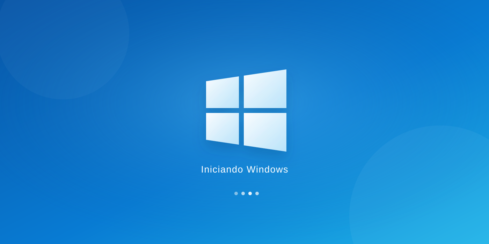

Instalación del sistema
Instalación limpia y configuración básica del sistema operativo. Se confirma la compatibilidad antes de comenzar.
Instalación limpia del sistema
Preparamos tu computador con una instalación limpia del sistema operativo y su configuración inicial, para que puedas volver a usarlo con tranquilidad.
Solicitar formateo por WhatsApp
Instalación limpia y configuración básica del sistema operativo. Se confirma la compatibilidad antes de comenzar.
Revisamos las necesidades del equipo y te orientamos antes de iniciar el proceso.
Configuración inicial y asistencia para dejar el equipo listo para volver a utilizarse.
Antes de formatear, respalda tus archivos importantes. El respaldo de datos y las licencias del sistema no se incluyen salvo acuerdo previo.
Cuéntanos el modelo del computador y qué problema presenta para consultar el proceso.
Consultar formateo